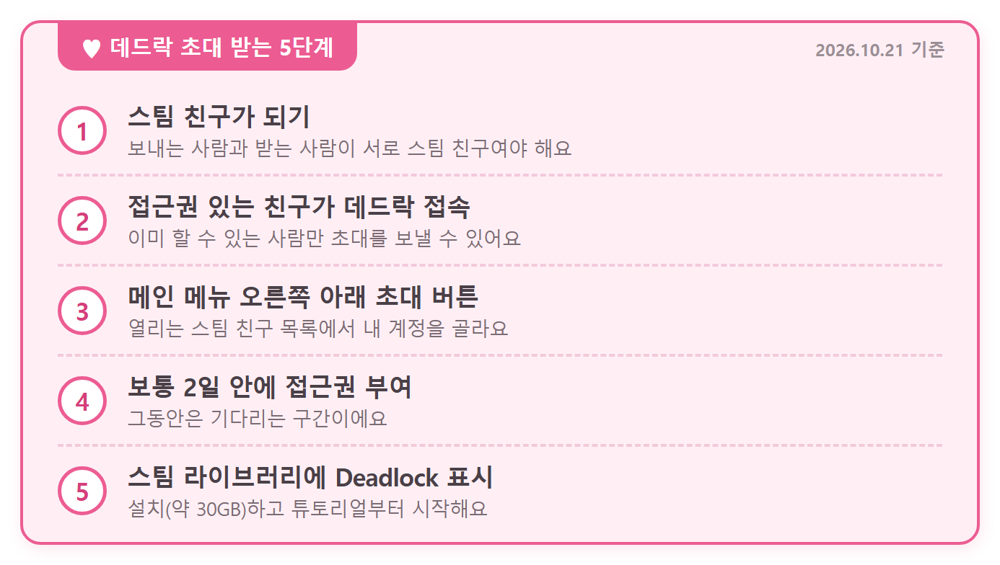
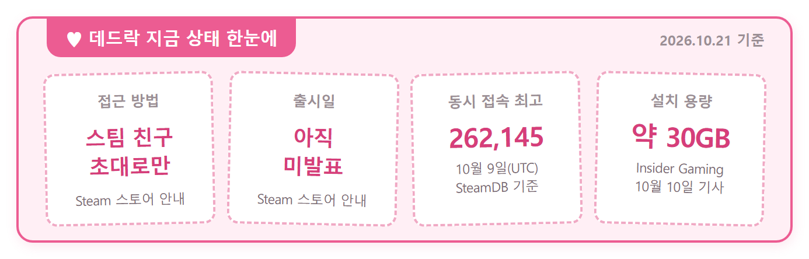
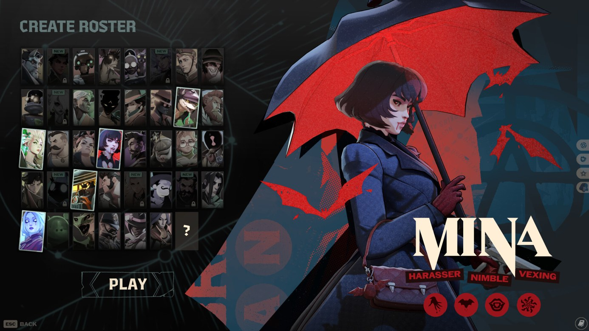

데드락 초대 받는 법, 스팀 친구 초대 절차와 설치 용량까지 한눈에
데드락(Deadlock) 해 보고 싶어서 스팀 스토어를 열었다가 설치 버튼이 없어서 어리둥절했던 분들 많으시죠. 스토어 페이지를 열어 보면 이 게임은 이미 접근권이 있는 스팀 친구가 인게임 메뉴에서 초대를 보내 줘야 시작할 수 있는 구조예요. 이 글은 2026년 10월 21일 확인 기준인데요, 상태는 언제든 바뀔 수 있어요.
데드락 초대 없이는 지금도 못 하나요?
2026년 10월 21일 기준으로 데드락은 스토어에서 바로 설치할 수 없고, 접근권이 있는 스팀 친구의 초대를 받은 사람만 할 수 있어요.
Valve가 개발하고 배급하는 이 게임은 스토어 페이지에서 개발 초기 단계의 멀티플레이어 게임이라고 스스로 소개하고 있어요. 그래서 플레이테스트에 참가 중인 친구가 있어야 문이 열리는 구조죠. 한국어판 스토어 페이지에도 게임 이름은 Deadlock 영문 그대로 적혀 있으니, 검색하실 때는 영문 이름으로 찾는 게 편하죠.

데드락 스토어 헤더 이미지
이미지 출처: Steam 스토어 Deadlock 페이지 (Valve)
데드락 초대 받는 순서는 어떻게 되나요?
데드락 초대는 5단계로 오는데요, 핵심은 접근권을 가진 친구가 인게임 메인 메뉴에서 스팀으로 초대를 보내는 것이에요. 생각보다 단순하죠.

초대 받는 순서를 한 장으로 정리했어요
카드 직접 제작 · 내용 출처: SeeMeta 가이드(2차), Insider Gaming(2차)
- 보내 줄 친구와 먼저 스팀 친구를 맺어요. 두 사람이 스팀 친구여야 초대가 갑니다.
- 접근권이 있는 친구가 데드락을 실행해요. 초대는 게임 안 메뉴에서 보낸다고 설명돼 있어요.
- 그 친구가 메인 메뉴 오른쪽 아래의 초대 버튼을 누르고, 열린 스팀 친구 목록에서 내 계정을 골라요.
- 그 뒤 받는 쪽이 초대를 수락하고, 접근권이 들어오길 기다려요(보통 2일 안).
- 스팀 라이브러리에 Deadlock이 보이면 설치하고 튜토리얼부터 시작해요. 용량은 Insider Gaming 기준 약 30GB나 되네요.
두 매체가 설명하는 흐름은 거의 같습니다. Insider Gaming은 접근권 있는 사람에게 초대를 받고 그 초대를 수락한 뒤, 초대와 테스트 접근 승인이 처리되기를 기다렸다가 설치하라고 했어요. SeeMeta는 접근권이 부여되면 스팀 라이브러리에 Deadlock이 나타난다고 했고요. 이 절차는 두 매체의 설명을 기준으로 정리한 내용이에요.
데드락 초대를 보내는 쪽은 뭘 하면 되나요?
접근권이 있는 사람이 게임 메인 메뉴 오른쪽 아래의 초대 버튼을 눌러, 열린 스팀 친구 목록에서 받는 사람 계정을 고르면 돼요.
2024년 플레이테스트 시기를 다룬 Dexerto 2024년 9월 기사에는 이 자리가 파란 상자로 떠 있었고 'Invite your Friends'라는 문구가 적혀 있었다고 해요. 열리는 목록이 스팀 친구 목록이라 친구가 아닌 계정은 고를 수 없으니, 친구 요청을 먼저 주고받아 두는 게 순서죠. 초대가 가고 나면 받는 분은 Insider Gaming 설명대로 초대를 수락하고, 라이브러리에 Deadlock이 뜨는지 지켜보면 돼요.
- 초대를 수락하는 화면이 실제로 어떻게 생겼는지, 어떤 알림이 뜨는지 (Insider Gaming이 수락 단계가 있다고만 안내)
- 2026년 인게임 초대 버튼이 2024년 파란 상자와 같은지, 한국어 클라이언트에서는 어떻게 표기되는지
- 스팀 앱이나 웹 같은 게임 밖 초대 경로가 있는지
- Valve가 직접 풀어 쓴 초대 안내 문서나 공식 신청 경로 (스토어 문구 외)
스팀 친구가 없으면 어떻게 하나요?
지금 확인된 입장 경로는 친구 초대뿐이라서, 먼저 스팀 친구 중에 접근권이 있는 사람이 있는지부터 살펴보는 게 순서예요.
이럴 땐 이렇게 해 보세요
· 스팀 친구 중에 데드락을 하는 사람이 있으면: 그 친구에게 초대를 부탁해요. 초대는 접근권이 있는 사람이 게임 메뉴에서 보내는 거거든요.
· 초대를 받았는데 라이브러리에 안 보이면: 초대와 테스트 접근 승인이 처리되는 시간이 필요하니 조금 기다려 봐요.
· 아는 사람 중에 하는 사람이 없으면: Insider Gaming은 Reddit 메가스레드나 Discord 같은 곳에서 접근권을 가진 사람을 찾으라고 안내했어요. 다만 Valve의 안내가 아니라 매체의 설명이고, 스토어가 말하는 입장 경로는 친구 초대예요. 급하지 않다면 출시 소식을 기다리는 쪽도 무난하죠.
한 가지 조심할 게 있는데요, 스팀 토론 게시판에는 'FAST DEADLOCK INVITES' 같은 초대 홍보 글이 몇 분 간격으로 올라오네요. 이런 글은 Valve가 올린 공식 안내가 아니고, 진짜인지는 판단하기 어려워요. 다만 초대를 받으려고 계정 정보를 넘기거나 결제를 요구받는 상황이라면 한 번 멈추고 생각해 보시는 게 좋아요.
지금 데드락은 어떤 상태인가요?
데드락은 스토어에 출시일이 발표 예정으로만 적힌 개발 초기 빌드인데도, 10월 9일에는 동시 접속자가 약 26만 명(262,145명)까지 올랐어요. 인벤 글로벌(Inven Global)이 SteamDB를 인용해 전한 수치로, 역대 최고 기록이에요.

카드로 접근 방법·출시일·최고 동접·설치 용량을 정리했어요
카드 직접 제작 · 내용 출처: Steam 스토어(1차), Inven Global(2차), Insider Gaming(2차)
카드 말고도 스토어 페이지에는 이런 내용이 적혀 있어요.
- 출시일은 스토어에 발표 예정으로만 적혀 있어요
- 사용자 평가가 아직 쌓이지 않았어요
- 임시 아트와 실험적인 게임플레이가 많다는 안내가 붙어 있어요
- 스토어 태그에는 무료 플레이와 앞서 해보기가 달려 있어요
Insider Gaming 10월 10일 기사에 따르면 9월 29일에 'City Never Sleeps' 업데이트가 있었고, 신규 영웅 업데이트 3건이 대기 중이라고 해요. 확정된 일정은 아니라서 참고만 하세요. 영웅 이야기가 나온 김에, 스토어에 올라온 CREATE ROSTER(영웅 로스터 구성 화면)도 같이 볼까요.

스토어에 올라온 CREATE ROSTER(영웅 로스터 구성 화면)이에요
이미지 출처: Steam 스토어 Deadlock 페이지 (Valve)
자주 묻는 질문
Q. 돈을 내야 받을 수 있나요?
스토어 페이지에는 가격이 표기돼 있지 않고 태그에는 무료 플레이가 달려 있어요. 다만 출시 때 판매 방식은 아직 발표 전이라 지금 단정하기는 어려워요.
Q. 한 사람이 몇 명까지 초대할 수 있나요?
2026년 자료에서는 숫자를 찾지 못했어요. 2024년 자료는 Destructoid가 '원하는 만큼', ONE Esports가 '1명'으로 엇갈려서 숫자는 적지 않을게요.
Q. 초대한 친구가 제재를 받으면 같이 불이익이 있나요?
Dexerto 2024년 9월 기사에는 초대한 사람이 치팅으로 걸리면 초대받은 사람도 제재될 수 있다고 적혀 있었어요. 지금도 같은 규칙인지는 확인하지 못했지만, 초대를 주고받을 때 알아 둘 만해요.
Q. 정식 출시는 언제쯤인가요?
Valve가 날짜를 발표하지 않았어요. Insider Gaming은 정식 출시나 오픈 베타가 2027년 이전에 나올 가능성은 낮다고 봤는데, 매체 의견이라 확정은 아니에요.
Q. 초대 방식은 예전부터 이랬나요?
팬 위키인 deadlock.wiki에 따르면 2024년 6월 6일에 초대가 스팀으로 옮겨졌고, 그때는 친구로 지낸 기간 요건과 제한 계정 초대 불가 조건이 있었어요. 6월 20일에는 기간 요건이 없어지고 초대 필터링 시스템이 추가됐다고 해요. 당시 초대는 누가 누구를 초대했는지 이어서 관리하는 초대 트리 방식이었다고 하는데, 위의 제재 이야기도 이 구조에서 나온 걸로 보여요.
데드락 초대 정리
데드락은 지금 스팀 친구의 인게임 초대가 있어야 들어갈 수 있는 초대제예요. 스팀 친구 목록에서 이미 하는 사람이 있는지부터 살펴보는 게 가장 빠른 길이에요. 초대가 도착하면 다들 즐겜하세요~
참고한 곳 (2026.10.21 기준)
· Steam 스토어 Deadlock 페이지 (1차 · 공식)
· Insider Gaming: 데드락 스팀 플레이 방법 (2차 매체)
· Inven Global: 데드락 동시 접속 26만 돌파 (2차 매체)
· SeeMeta 데드락 가이드 (2차 매체)
· 2024년 자료: Dexerto · Destructoid · ONE Esports · deadlock.wiki(팬 위키)